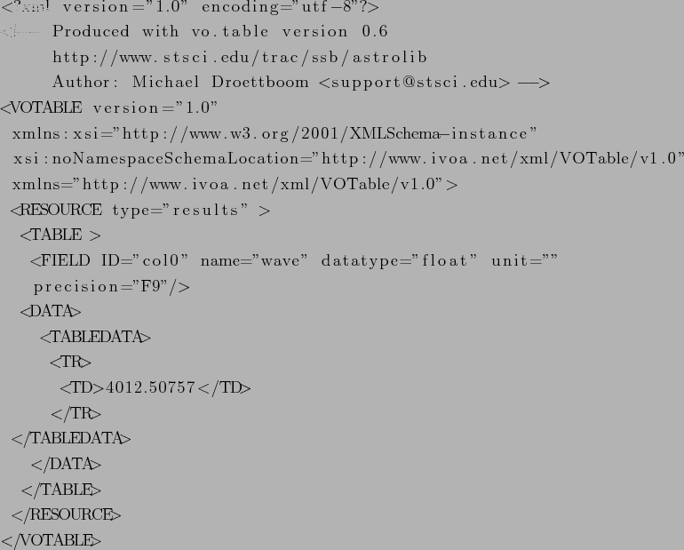

Following example of VOTable was created from SDSS FITS file used in
this work. First there is an information about XML and VOTable
versions and references to corresponding XML Schema ![[*]](/usr/share/latex2html/icons/footnote.png) . <TABLE> tag encapsulating tabular data. <FIELD>
tag describe identifinaction (ID), type and precision of
columns. <DATA> tag contains data (here) in TABLEDATA format (other
types are FITS and BINARY)
. <TABLE> tag encapsulating tabular data. <FIELD>
tag describe identifinaction (ID), type and precision of
columns. <DATA> tag contains data (here) in TABLEDATA format (other
types are FITS and BINARY)

Astar Seran
2011-04-01